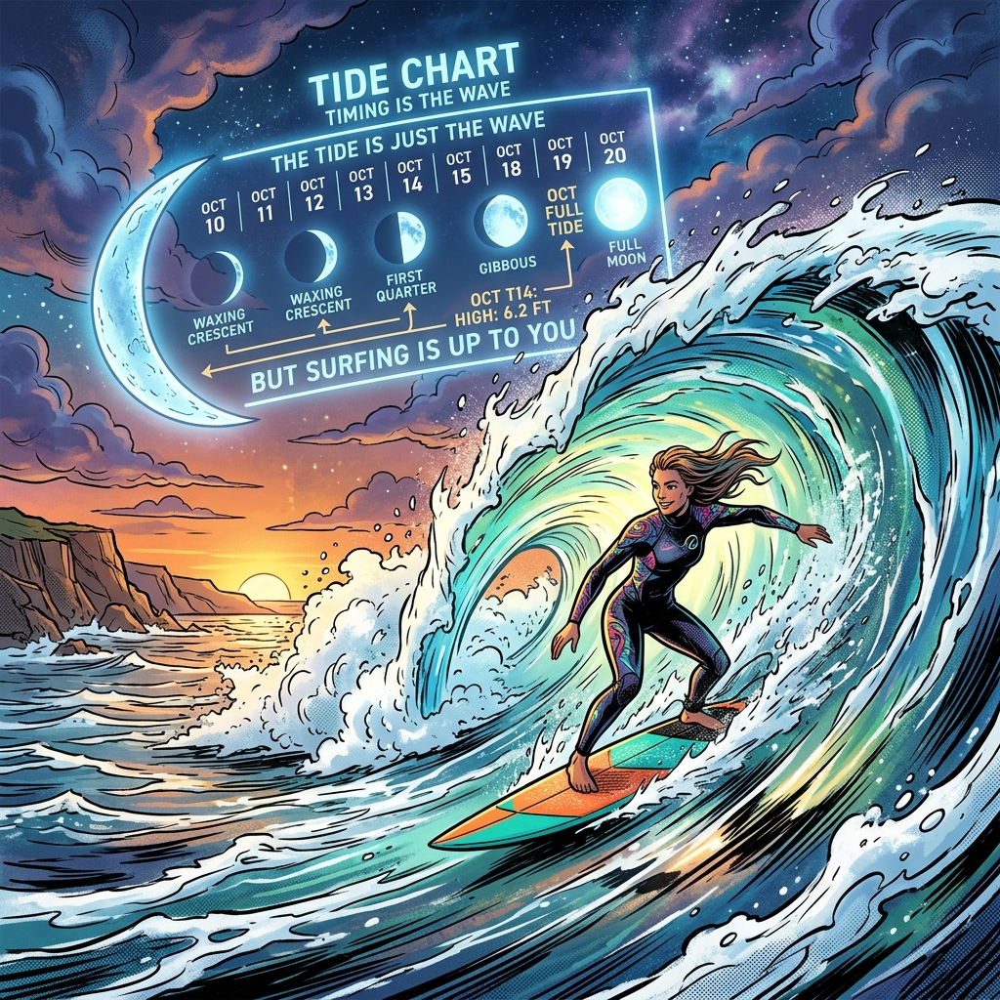
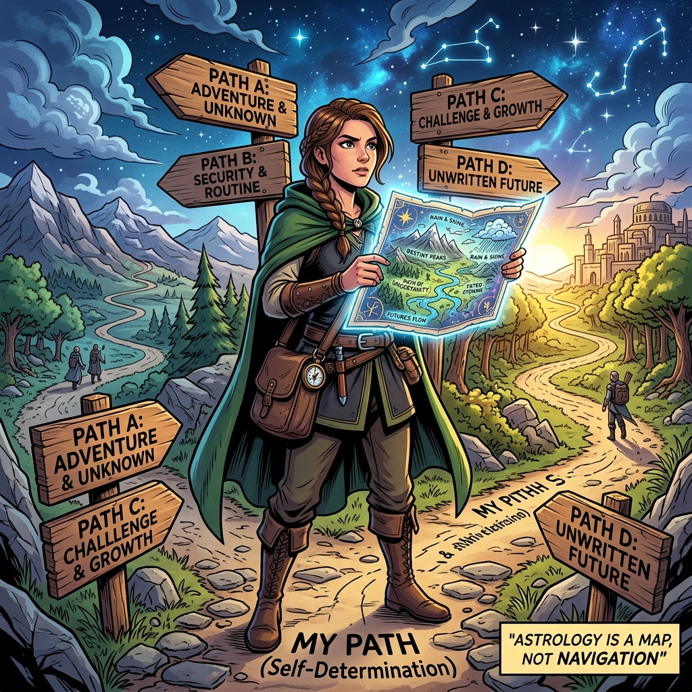

是不是命中注定？流年每個月真的會照著發生嗎？
八字的底層邏輯確實是：你在某年某月某日某時出生，天干地支就排好了，你的「出廠設定」就這樣了。這聽起來很像宿命論——命是天注定的。
但如果八字是 100% 宿命的，那同年同月同日同時出生的人，應該過一模一樣的人生。事實上不會。
同一個八字，出生在台北和出生在非洲，人生天差地遠。同一個八字，有受教育和沒受教育，發展完全不同。所以八字決定的不是「你的命運」，而是「你的硬體規格」。
你出生時拿到的是一台手機，八字就是你的「出廠說明書」：
但這台手機最終變成什麼？
大運確實是固定的——你幾歲到幾歲走什麼運，算出來就不會變。但大運決定的是「環境給你什麼風」，不是「你會飛到哪裡」。
同樣是偏財年（有賺錢機會的年份）：
有準備、有存款、看到機會就出手 👉 賺到了
沒準備、沒存款、機會來了接不住 👉 錯過了
太貪心、All in、槓桿開到最大 👉 虧爆了
三個人走的是同一個偏財年，但結果天差地別。大運給你的是「東風」，但你是諸葛亮還是路人甲，看你自己。
流月到底是怎麼算出來的？每個月都有一個固定的「流月干支」數學計算。例如 2026 丙午年，正月是庚寅，三月是壬辰。如果你的日主是「庚金」，AI 或算命師就會根據「食神當令」推斷你適合學習或表達。
這個推導邏輯是合理的。但「適合」不等於「一定會發生」。
因為影響你這個月過得好不好的因素，流月干支只佔一小部分。來看看你人生的「影響力佔比」：
算命系統只看流月干支這 5-10% 的部分，然後假裝能預測你整個月——這就是為什麼有時準有時不準。

它的價值不是「預測事件」，而是「標注能量節奏」。潮汐表告訴衝浪者「明天早上 8 點浪最大」，但不會告訴你「你明天一定會衝到完美的浪」。
「三月你會升職」
「八月你會發財」
「三月的能量適合主動出擊，如果你正好有機會，出手比較有利。」
「八月有偏財的能量，留意投資機會，但不保證一定賺。」

地圖告訴你地形長什麼樣，但往哪裡走、走多快、走哪條路——是你自己的決定。